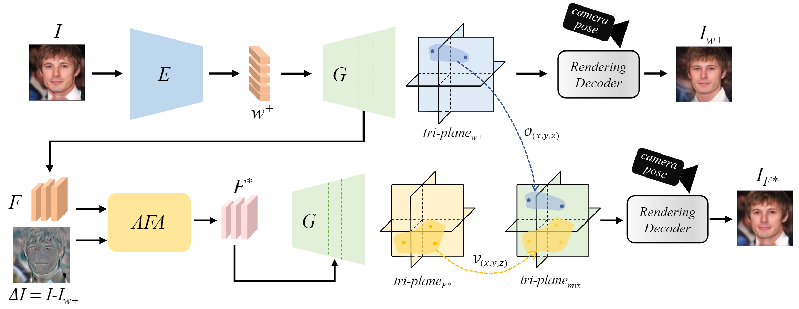

Make Encoder Great Again in 3D GAN Inversion through Geometry and Occlusion-Aware Encoding

Abstract
3D GAN inversion aims to achieve high reconstruction fidelity and reasonable 3D geometry simultaneously from a single image input. However, existing 3D GAN inversion methods rely on time-consuming optimization for each individual case. In this work, we introduce a novel encoder-based inversion framework based on EG3D, one of the most widely-used 3D GAN models. We leverage the inherent properties of EG3D's latent space to design a discriminator and a background depth regularization. This enables us to train a geometry-aware encoder capable of converting the input image into corresponding latent code. Additionally, we explore the feature space of EG3D and develop an adaptive refinement stage that improves the representation ability of features in EG3D to enhance the recovery of fine-grained textural details. Finally, we propose an occlusion-aware fusion operation to prevent distortion in unobserved regions. Our method achieves impressive results comparable to optimization-based methods while operating up to 500 times faster. Our framework is well-suited for applications such as semantic editing.
Pipeline

Overview of our method. Our framework could be divided into two parts. (1) W space inversion. We design an encoder E to invert input image I into w+ latent codes. The w+ latent codes are fed into a pre-trained EG3D generator G to get tri-planew+ and rendered into reconstruction image Iw+. (2) Complement the F space. We calculate the image residual \Delta I between the input image and its reconstruction and propose AFA module to refine the F latent maps. The modified latent maps F* are transformed into tri-planemix by occlusion-aware mix and rendered into the fine detailed inversion image IF*.
Novel View Synthesis
Novel view synthesis on CelebA-HQ. Our method can generate novel view images with high-fidelity and strong 3D-consistency with our powerful encoder.
Comparison with existing Methods
Our method surpasses all the encoder-based methods and is competitive with optimization methods in recovering texture details, i.e. our encoder obtains good 3D-consistent geometry and avoids artifacts in the novel view.
3D-Consistent Editing
Our method generates both realistic editing and 3D-consistent novel views.